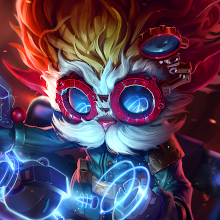

Piltover, La Ciudad del Progreso
Conocida tambien como La ciudad del progreso, Piltover es la region mas avanzada tecnologicamente hablando, contando con el Hextech, la fusion perfecta de tecnologia y magia, cuyo poder proviene de unos extraños cristales. Esta ciudad esta en constante disputa con su ciudad vecina Zaun, considerando a estos como inferiores. En esta region no hay dioses ni mitos destacables
Algunos de los campeones mas importantes son:
|  |
|---|